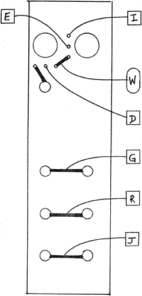

RANDOM VOLTAGE GENERATOR PC board 1175SSHC IMPORTANT NOTE: For the RVG to function properly, three jumpers must be installed on board: between square pads A & H, H & P (these two jumpers tie together at pad H) and one between pads S & L. Also: a connection must be made between the MOISE SOURCE to pad K on the RANDOM VOLTAGE GEN. This connection is necessary because the RVG obtains its randomness from the NOISE SOURCE... SELF-TEST PROCEDURE The NOISE SOURCE should be tested before proceeding to this test! 1) Patch the VC input of a VCO or other suitable audio generator from the "SMOOTH" output of the RANDOM GEN. Monitor the VCO through loudspeakers. As you turn the right hand knob CW, a change in the rate of a random envelope should be heard. 2) Patch the VCO VC input from the "STEPPED" output. Randomly timed and randomly selected voltage levels should be heard, whose rate is variable as above, 3) Patch the VCO from the "PULSE" output of the RANDOM. Turn the processing knob of the VCO so that it has a reduced range. You should hear a pursed alternation of pitches which is random as to its timing, variable as above when turning the right hand internal rate knob. Repeat test 1) using however an external CV source (manually or automatically recycling) to test for the proper functioning of the RANDOM GEN.'s control voltage input and its processing knob. Note that the processing knob, unlike many of the processing knobs found in the system, only serves as an attenuator for CV, and does not invert CV present at the VC input.
|